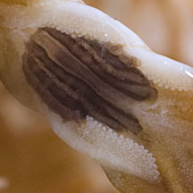
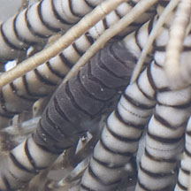

|
|
| worms text index | photo index |
|
worms > Phylum Annelida >
Class Polychaeta
|
| Feather star
worms awaiting identification Family Myzostomidae updated Oct 2016 Where seen? These tiny worms are found only on feather stars. Their colours and patterns usually perfectly match their host. What is a scale worm? They are segmented bristleworm belonging to the Family Myzostomidae, Class Polychaeta, Phylum Annelida. The polychaetes include bristleworms, and Phylum Annelida includes the more familiar earthworm. Features: About 1cm long. These worms are usually flat and broad with tiny 'feet' which can hardly be seen. Their colours and patterns usually perfectly match their host. What do they eat? They are considered to be parasites on the feather star host. |
 Sisters Island, Aug 12  Sisters Island, Aug 12 |
| Feather star worms on Singapore shores |
| Photos of Feather star worms for free download from wildsingapore flickr |
| Distribution in Singapore on this wildsingapore flickr map |
References
|